ETERNAL FLARE
2150
"The chill of greed burns. Feed it"
- Chima Gon
- Chima Gon
More of a cult than anything else, The Eternal Flare Oder
believed that it was a higher power that decided that Eden
must be punished under such horrific conditions. They prayed to
and believed that one day after it had been
deemed that they had suffered enough, they would be saved
and a new seed would be planted for a world more prosperous than the
last. However, they did not ever align with New Bearing’s
efforts to stay as they believed that they must not try to
save themselves. They believed that we had done
the unforgivable and that we must suffer
completely for our sins.

77 · 8342562 · 071702 · 101916 · 44